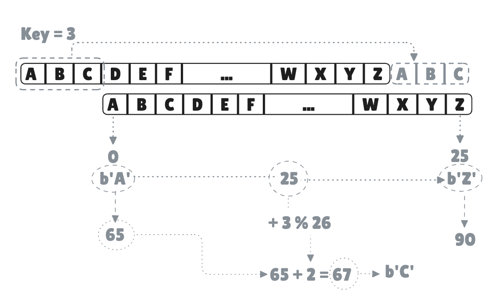

Lesson 5 — Control Flow & Edge Cases
Goal: Fix the cipher. Handle wrap-around, uppercase, lowercase, and add
decrypt.Concepts:
if/else,ifas an expression,match, range patterns, modulo%, byte literalsb'A'.
The problem with the current cipher
From lesson 4, shifting 'Z' by 3 gives ']' — wrong. The alphabet has 26 letters and must wrap around: 'Z' + 3 = 'C'.
We also haven’t handled uppercase and lowercase differently. 'H' and 'h' need separate treatment because they live in different ASCII ranges.

This lesson fixes both problems using control flow.
if / else if / else
The basic conditional:
#![allow(unused)]
fn main() {
let n = 7;
if n > 10 {
println!("big");
} else if n > 5 {
println!("medium");
} else {
println!("small");
}
}Rules:
- The condition does not need parentheses (unlike C).
if (n > 10)works but is considered bad style. - The condition must be a
bool. Rust does not treat0or""as false —if nwon’t compile ifnis an integer. - Every branch must have
{ }. No single-line braceless branches.
if is an expression
In Rust, if evaluates to a value. You can assign its result:
#![allow(unused)]
fn main() {
let label = if n > 0 { "positive" } else { "non-positive" };
}This is equivalent to Python’s "positive" if n > 0 else "non-positive" or C’s ternary n > 0 ? "positive" : "non-positive".
Both branches must return the same type. This won’t compile:
#![allow(unused)]
fn main() {
let label = if n > 0 { "positive" } else { 42 };
// ^^^^^^^^^ ^^
// &str i32 — type mismatch
}If you use if as an expression, there must also be an else branch — otherwise what value does it return when the condition is false?
match — exhaustive pattern matching
match tests a value against a list of patterns and runs the first one that matches:
#![allow(unused)]
fn main() {
let c = 'H';
match c {
'A'..='Z' => println!("uppercase letter"),
'a'..='z' => println!("lowercase letter"),
'0'..='9' => println!("digit"),
_ => println!("something else"),
}
}Things to know:
A'..='Z' is an inclusive range pattern — matches any char from 'A' to 'Z' including both ends.
_ is the wildcard — matches anything not already caught. It’s like the default case in a C switch.
match is exhaustive — the compiler forces you to handle every possible value. If you remove the _ arm above, it won’t compile. This is one of Rust’s most useful safety features: you can never accidentally forget a case.
Each arm returns a value. Just like if, match is an expression:
#![allow(unused)]
fn main() {
let kind = match c {
'A'..='Z' => "uppercase",
'a'..='z' => "lowercase",
_ => "other",
};
}Modulo % — wrap-around arithmetic
The % operator gives the remainder of division:
#![allow(unused)]
fn main() {
10 % 3 // 1 (10 = 3×3 + 1)
7 % 7 // 0
5 % 26 // 5
27 % 26 // 1
}This is exactly what we need. Instead of thinking about absolute ASCII values, we can think about position within the alphabet (0 to 25), shift it, and wrap with modulo:
'A' → position 0
'B' → position 1
...
'Z' → position 25
To shift 'Z' (position 25) by 3:
(25 + 3) % 26 = 28 % 26 = 2 → position 2 → 'C' ✓
To shift 'A' (position 0) by 3:
(0 + 3) % 26 = 3 → position 3 → 'D' ✓
Works for any letter, any key.
Byte literals: b'A'
So far you’ve cast chars to numbers with 'A' as u8. Rust has a shorthand for writing character values as u8 directly: byte literals:
#![allow(unused)]
fn main() {
b'A' // same as 'A' as u8 — gives 65u8
b'a' // same as 'a' as u8 — gives 97u8
b'Z' // 90u8
}The b prefix means “give me the ASCII byte value of this character, as a u8”. This is purely a shorthand — both forms are equivalent.
Fixing shift_char
With match, range patterns, modulo, and byte literals, here is the correct implementation:
#![allow(unused)]
fn main() {
fn shift_char(c: char, key: u8) -> char {
match c {
'A'..='Z' => {
let offset = c as u8 - b'A'; // position 0–25
(b'A' + (offset + key) % 26) as char // shift and wrap
}
'a'..='z' => {
let offset = c as u8 - b'a'; // position 0–25
(b'a' + (offset + key) % 26) as char // shift and wrap
}
_ => c, // non-letter: return unchanged
}
}
}Step through 'Z' with key = 3:
- Matches
'A'..='Z' offset = 90 - 65 = 25(25 + 3) % 26 = 265 + 2 = 67→'C'✓
Step through 'h' with key = 3:
- Matches
'a'..='z' offset = 104 - 97 = 7(7 + 3) % 26 = 1097 + 10 = 107→'k'✓
Adding decrypt
Decryption is just shifting in the opposite direction. Shifting by key to encrypt, and shifting by 26 - key to decrypt — because shifting by 26 brings you full circle:
#![allow(unused)]
fn main() {
fn decrypt(text: &str, key: u8) -> String {
encrypt(text, 26 - key % 26)
}
}key % 26 handles keys larger than 26 (e.g. key 29 is the same as key 3). Then 26 - that gives the reverse shift.
Putting it together
The final program:
fn shift_char(c: char, key: u8) -> char {
match c {
'A'..='Z' => (b'A' + (c as u8 - b'A' + key) % 26) as char,
'a'..='z' => (b'a' + (c as u8 - b'a' + key) % 26) as char,
_ => c,
}
}
fn encrypt(text: &str, key: u8) -> String {
let mut result = String::new();
for c in text.chars() {
result.push(shift_char(c, key));
}
result
}
fn decrypt(text: &str, key: u8) -> String {
encrypt(text, 26 - key % 26)
}
fn main() {
let message = "Hello, World!";
let key: u8 = 3;
let encrypted = encrypt(message, key);
let decrypted = decrypt(&encrypted, key);
println!("=== Caesar Cipher ===");
println!("Original : {}", message);
println!("Key : {}", key);
println!("Encrypted : {}", encrypted);
println!("Decrypted : {}", decrypted);
}Output:
=== Caesar Cipher ===
Original : Hello, World!
Key : 3
Encrypted : Khoor, Zruog!
Decrypted : Hello, World!
The cipher is complete.
Exercises
Run:
rbb watch caesar-05
Four exercises on control flow and wrap-around. Then update the project with the fixed shift_char and the new decrypt function.